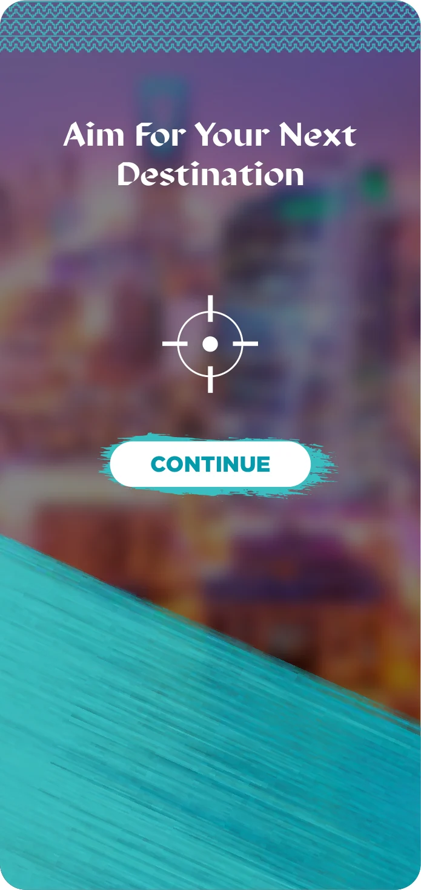

Destination selection
The native screen set names destinations, invites the user to aim for a next destination and introduces selfie capture.
A place choice leads toward a personal photo moment.
Explore the story
Connect destination discovery with a themed capture sequence.
The screens introduce destination choices, an aiming prompt and selfie capture. A later selection view names places including AlUla, Tabuk and Jeddah Al Balad.
The native screen set names destinations, invites the user to aim for a next destination and introduces selfie capture.
A later selection page presents places such as AlUla, Tabuk and Jeddah Al Balad, giving the sequence a clear destination-discovery theme.
Explore the complete compositions and interface states. Select any image for a closer look.
Structure, interaction and visual decisions that give the work its character.
RoleConfirm destination-selection flow, capture-screen design and image adaptation.
AssetsCredit destination photography, supplied tourism identity/content and the camera/game implementation separately. Private evidence draft. The theme, pattern, background and typography may derive from supplied tourism guidelines. Personal layout and implementation contribution remain unverified. Only isolated footer identity vector paths were removed. This saved design view contains no participant photo, destination record or live session data.
StatusPrivate source/output study; contribution, implementation, final approval and delivered use remain unverified.